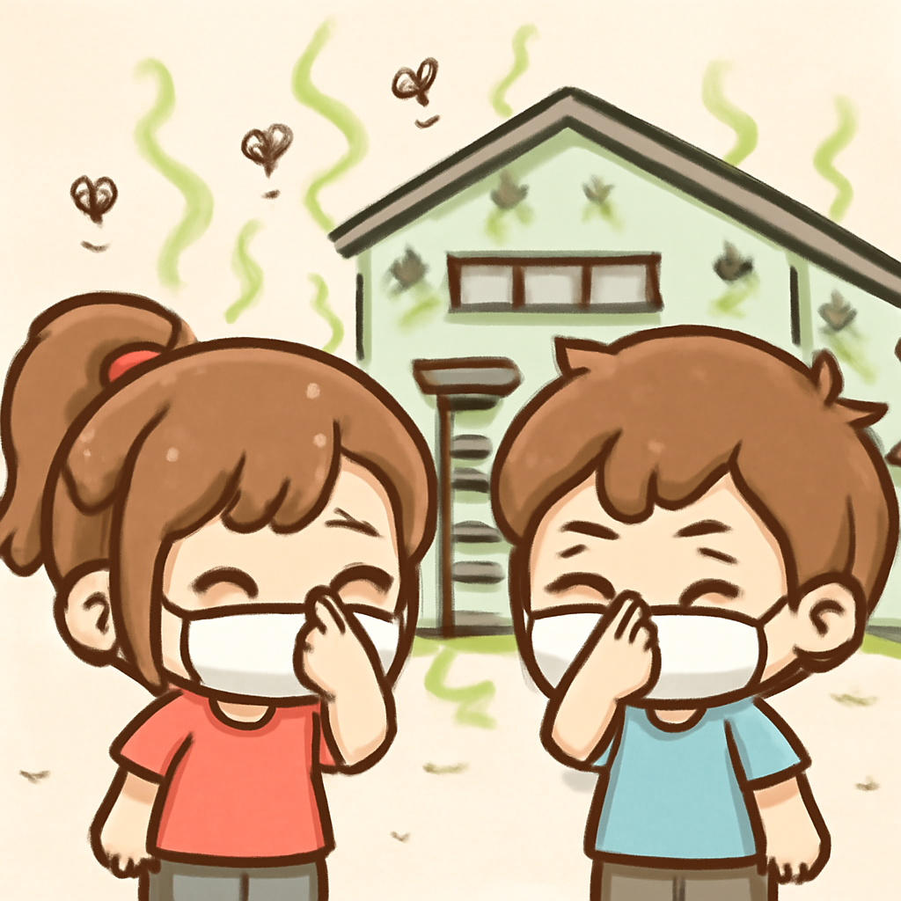

其一 · 以色列耶路撒冷 · 以色列拒絕特朗普的和平計畫
以色列總理表示不會撤軍，直至哈馬斯真心放下武器。
在以色列耶路撒冷，總理內塔尼亞胡表示，軍隊不會撤出加薩，直到哈馬斯真的放下武器。這則新聞的重要性在於，這將影響中東局勢的穩定，讓人擔心和平的希望又一次被打擊。看來，和平計畫又得重新洗牌了。
🔗 原始新聞 ↗
2026-08-10 · 以古觀今，以笑抗愁
以色列總理表示不會撤軍，直至哈馬斯真心放下武器。
在以色列耶路撒冷，總理內塔尼亞胡表示，軍隊不會撤出加薩，直到哈馬斯真的放下武器。這則新聞的重要性在於，這將影響中東局勢的穩定，讓人擔心和平的希望又一次被打擊。看來，和平計畫又得重新洗牌了。
🔗 原始新聞 ↗
加拿大面臨大規模野火，超過 53 平方英里失控。
在加拿大不列顛哥倫比亞省，巴爾德山野火已經失控，燒毀超過 53 平方英里，當地居民被警告要做好最壞的準備。這場野火不僅影響了當地生態，也讓人們再次關注氣候變遷的嚴峻挑戰。希望大家的防火意識能提高，畢竟，野火可不是個好伙伴。
🔗 原始新聞 ↗
厄瓜多爾檢方控告六人，涉及刺殺候選人案件。
在厄瓜多爾基多，檢方對前部長及六名其他人提起控告，指控他們與候選人費爾南多·維利維西奧的刺殺案有間接關係。這事件引發了對政治暴力的關注，對即將舉行的選舉造成衝擊，讓人不禁懷疑政治的安全性。希望未來的選舉不會變成一場生死攸關的較量。
🔗 原始新聞 ↗
洛杉磯一食品倉庫火災後，腐肉惹來臭味困擾。

在美國洛杉磯，隨著一場火災摧毀了一個大型食品倉庫，現在這裡堆滿了腐爛的肉，散發出無法忍受的臭味。這個情況不僅影響了當地居民的生活品質，也引發了對食品安全的關注。希望這股氣味不要成為洛杉磯的新地標。
🔗 原始新聞 ↗
德國警方調查軍事基地上空的無人機目擊事件。
在德國萊比錫，警方正在調查一宗無人機在軍事基地上空出現的事件。該基地據報是用來儲存愛國者飛彈系統的部件，這引起了不少關注。無人機的出現讓人不禁想，這是高科技的監視還是隨機的趣味飛行？不過，無論如何，這可不是隨便飛飛的地方。
🔗 原始新聞 ↗